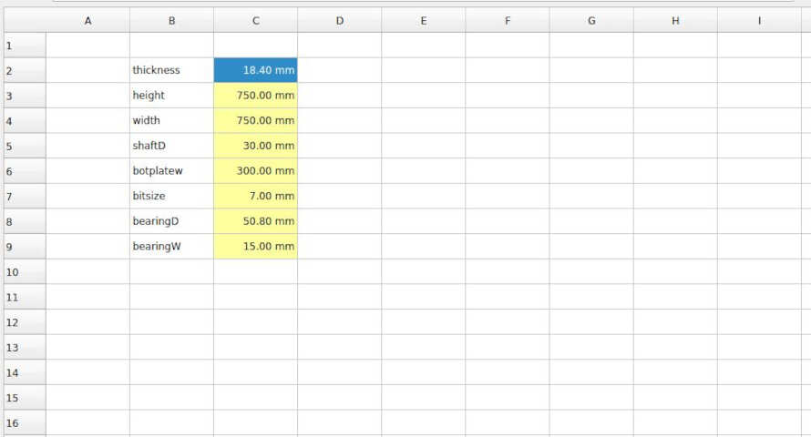
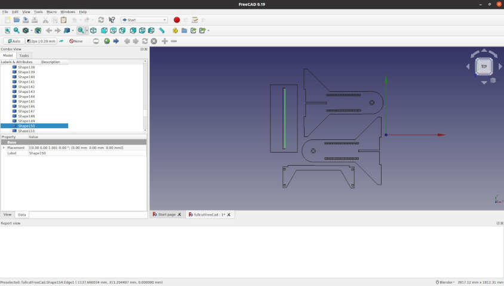

For this week’s assignment, we were tasked with designing, milling, and constructing a large object using a large format CNC machine. The purpose of the assignment was to learn how to use large format CNC machines and how to design for it. As usual, there was a group assignment related to characterising the CNC machine, and an individual assignment, which involved designing and constructing your own piece. Details regarding the requirements of the assignments as well as the learning outcomes are given below.
Group assignment:
- Test runout, alignment, speeds, feeds, and toolpaths for your machine
- Document your work (in a group or individually)
Individual project
- Make (design+mill+assemble) something big
Learning outcomes
- Demonstrate 2D design development for CNC production
- Describe workflows for CNC production
- Link to the group assignment page
- Document how you designed your object (something big)
- Document how you made your CAM-toolpath
- Document how you made something BIG (setting up the machine, using fixings, testing joints, adjusting feeds and speeds, depth of cut etc.)
- Describ problems and how you fixed them
- Include your design files and ‘hero shot’ photos of final object
In the following section, i will
Group Assignment
The group assignment was to test the runout, alignment, speeds, feedsm and toolpaths for the lab’s machine. To do this, Jason, of Fab Lab Vancouver, gave an overview of how the machine works and how to characterize it. First, let’s discuss the details of the machine we are using in our Fab Lab.
Equipment Details
The large format CNC machine that we use in our shop is called the ShopBot PRSalpha. with a 6’ x 8’ bed as pictured below.
the specs for the machine are as listed below:
- XY move speed: Variable, max. 600"/min
- Z move speed: Variable, max 600"/min
- XY positioning speed: Variable, max. 1800"/min
- Z positioning speed: Variable, max. 900"/min
- Step resolution: 0.0005"
- Positional accuracy: +/- 0.0003"
- Linear cut force: approx. 150 lbs.
- X and Y axis drive system: Rack and pinion
- Z axis drive system: Rack and pinion
- Input voltage: 110V (30 A); or 220 V (15 A), single phase, 50-60Hz
Machine overview
Before characterizing the machine, Jason gave a general overview about it and how to operate it. In this video, Jason discusses the following points:
- Turning the machine on and off
- Changing the bit
- Zeroing the x, y, and z axes
- Managing the ventilation system
- Securing the workpiece
- Running a toolpath
The next exercise was to test the runnout of the machine.
Testing runout
After receving an introduction to the machine, it was time to test the runout. CNC runout is defined as a rotation inaccuracy that occures when the tool is no longer aligned with the main axis {reference}. This is typically caused by debris inside the spindle entering during the tool change process.
There are two types of CNC spindle runout:
a) Axial runout: when the tool is rotating at an angle to the axis (as pictured above). b) Radial runout: when the tool is rotating off center to the main axis.
In some cases both types of runout can occur simultaneously.
There are two types of tools that can be used to measure spindle runout (a) a dial indicator and (b) a non-contact sensor.
a) Dial indicator: A dial indicator is an analogue gauge that can be used to measure runout. This method can be used for periodic checks but is not ideal for continuous operation. A picture of a dial indicator is below.
b) Non-contact sensor: The non-contact sensor is an automatic measuring system that utilizes an eddy current sensor to detect runout with no contact. It is a much more expensive piece of equiment, but is recommended for processes that will run continuously. A picture of a non-concat sensor is below.
Our lab uses a dial indicator to test the runout. Below is a video of how to use our equipment to test runout on our machine. Our machine had minimal runout. Below are some photos of the results of our test as well as a video documenting the process.
Testing alignment
The alignment of the CNC machine describes deviations that may occur in the x and y axis as the tool runs a straight path. Alignment can be measured using several methods.
a) measure the machine: The first method is to measure diagonally the distance between the rails of the machine and ensuring the distances match
b) drill a test piece: The second method is to drill four holes that are dimensioned as equal distance apart and measure diagonally across to see if there are any deviations.
At our lab, we measured the machine directly and found that there were no deviations in alignment. The video below documents the alignment testing process.
Testing speeds and feeds
Speeds and feeds are the cutting variables used in every milling operation and vary for each tool based on cutter diameter, operation, material, etc. {reference. With large format CNC machining, the speed and feed can be calculated knowing the chip load. the number of flutes on the bit, and the spindle RPM.
a) Speed: Speed is typically measured in surface feet per minute (SFM) and is a function of the cutter diamter and the RPM of the spindle given by the iquation below:
SFM = {Cutter Diamater * RPM}/3.82
b) Feed: The equation for calculating the feed in inches per minutes is given below:
Feed = RPM * IPT (inches per tooth) * # of Flutes
where IPT is typically designated by the material that you are cutting and can be found in tables such as the one below:
An easier method to determine speed and feed is using an online calculator such as the one given at this link here. An image of the calculator is shown below.
In our group assignment, we calculated and test the speed and feed using the calculator above for plywood with a 1/4" bit and a spindle speed of 14000 RPM. The video below discusses the speeds and feeds test in detail.
Testing toolpaths
The last part of the group assignment was learning how to make and test toolpaths. The program we use for creating our toolpaths is called V-Carve Pro. We are currently using version 9.5. Typically, with our lab, we will use the following three types of toolpaths the majority of the time.
a) profile (inside cut) b) profile (outside cut) c) pocket
The video below, describes in detail the methodology for creating and editing the toolpaths using the V-carve software:
To test our toolpaths, we actually ran a test piece to determine the bit cutting width to properly size our joints. We did this by creating a file with multiple t-bone joints and various material thickness settings. A discussion on T-bone vs Dogbone design in the toolpaths is included in the video below:
We decided to test the t-bone joint at material thickness settings of
- 17.6 mm
- 17.8 mm
- 18.0 mm
- 18.2 mm
- 18.4 mm
Below is a photo of the dxf file of the test piece that was cut:
After creating the dxf file, we were ready to create our toolpath. We found that when exporting from FreeCad there were issues that need to be addressed using the V-carve software to join open vectors. More details about this will be discussed in the individual assignment section below. Once the toolpath was created it was time to secure the material to the bed.
We then ran the toolpath using the ShopBot software and cut our test piece and tested the fit using another piece of plywood. The result was as follows:

The toolpath type used was the profile outside cut, and the results from the test indicated that a material thickness of 18.4 mm is required to have a snug fit.
Individual Assignment
In this section, I will present the workflow and methodology used to complete the requirements for the individual assignment, which were to design, cut, and construct a large format piece that is on the order of 1 m in scale.
The concept
During the 3D printing and scanning week, it was discovered that, the piece that I intended to print for my final project is too large for our 3D printer beds. After some brainstorming, Jason came up with the idea of using rotary casting to create the part for my final project.
Furthermore, during the 3D scanning exercise, we found that the results of our photogrammetry and lidar scanning left something to be desired.
Moreover, we had been brainstorming about possible ideas for the machine building week, in which we wanted to build something that could be useful to the lab. Cue the photogrammetry caster a dual purpose machine that can be used in either a 3D scanning, or rotational casting configuration.
In essence, our idea was to combine a rotational casting type of design such as the one below:

with the open source 3D scanning software and machine controller available at OpenScan as shown in the image below.
The idea is, over the following weeks, to build one modifiable machine that can be switched from rotary casting mode to 3D scanning mode with minimal modifications.
The workflow
In this section, I will discuss the workflow that seemed to work best for me in designing, cutting, and building the large format piece. I found the the following steps worked best for me:
- Sketch your concept
- Design your parameterized part using FreeCad
- Create testfit pieces for joints
- Update your FreeCad files to reflect joint geometries
- Use the draft tool to create 2D drawing and export as dxf
- Import your dxf files to inkscape and place
- seperate the features into layers -> profile, pocket, holes
- Upload to v-carve
- Create your toolpath files
- Cut your pieces
- Sand and finish
- Assemble
I will walk through each step in detail below.
1. Sketch your concept
In this step, develop the concept using pencil and paper and if necessary some construction paper or cardboard to make a wireframe to visualize your joints. The idea is not to make something perfect, but to have some parts concepts to discuss and iterate on. The photos below illustrate the results:


2. Design your parameterized part using FreeCad
The next step is to take your sketches and wireframes and design a more detailed version of your desgin using FreeCad. For lessons on FreeCad you can revisit Assignment 3. Another good reference video for Design using FreeCad for CNC in the context of Fab Academy is the video created by Kris of AaltoFab below:
In this week, the objective was to build just the machine frame and finalize the design details of the gears, motor mounts, and rotating frames in the following weeks. The results of the FreeCad are shown in the images below:

Note, it is extremely important to parameterize your design so that you can change variables such as the material thickness based on the test fits as shown below. The photo below shows the FreeCad spreadsheet that was created for this assembly.

Note that the types of joints used for this design are as follows:
- finger joint
- wedge joint
- tongue and groove joint
The type of cut used for each joint was the t-bone cut. Photos of the final joints will be shown below.
3. Create test fit pieces for joints
The next step is to characterise the machine and the bit you intend to use by cutting a test piece to determine the design material thickness of the joint vs. the cut thickness. This was done during the group assignment with the results shown below:
Note that the test piece results resulted in a material thickness required of 18.4 mm
4. Update FreeCad files to reflect joint geometries
In this step, you will revisit the paramaterised FreeCad file created and update the spreadsheet to reflect the results of your test fit. For me, I had to change thickness to 18.4 mm as pictured below
5. Use the draft tool to export dxf
The next step is to export your FreeCad files to dxf. There are numerous ways to do this. The following videos provide a short tutorial on how to perform this task.
The method I chose was to export the dxf files of all the different parts and then to create a new FreeCad sketch in which I imported the dxf files into one and then exported that as one dxf files. The photos below illustrate the results
6. Import your dxf files to Inkscape and place them
In this step, we want to seperate the different features by layer, the best tool to do this is Inkscape (note: this can also be done using V-carve Pro). To do this you can use the following features in Inkscape:
- Ungroup
- Join paths
- Send to layer
- Combine
- export as dxf
One of the difficulties with FreeCad is that when you export the dxf it exports every shape individually, which can cause issues with the toolpath software. For my next spiral I will attempt to use the methodology present by Kris from Aalto Fab. Below is an image of the inkscape files that was created.
7. Seperate the features into layers
As a continuation to the step above, ensure that the different features are exported to different layers. The layers I created were
- profile
- holes
these will be used to create seperate toolpaths for each feature in the following steps.
8. Upload to v-carve
The next step is to upload all the dxf file to vcarve and to ensure that all the vectors are joined and the layers are well defined. You will then use the layers to select the desired features required to create your toolpaths.
9. Create your toolpath files
Using V-carve, create a toolpath file for each of the layers. For my project, I created three toolpaths:
a) pocket: to pocket the bearing supports and tongue and groove joints b) profile (inside): to cut the holes c) profile (outside): to cut the profile of the pieces
The settings used for all of the layers are given in the image below:
The following images illustrate the resulting toolpaths:


10. Cut your pieces
In this step, you will secure the material to the bed and run the CNC machine. Below are some images of me securing the material:

Furthermore, the video below describes in detail how to operate the machine and walks through the actual process of zeroing and executing a cut.
The results of the cut are also shown below. Note we had an issue with the z-calibration so we made note that for our machine you must reset the zero to -2 mm on the z-axis after zeroing with the pressure pad.
11. Sand and finish
The next step is to remove any slivers and rough edges by sanding. A sanding power tool makes this job fairly simply
12. Assembly
The final step is to assembly your pieces into your finished piece. Below are some photos of the assembly process. I will also include some close ups of the joints as well.

Wedge joints